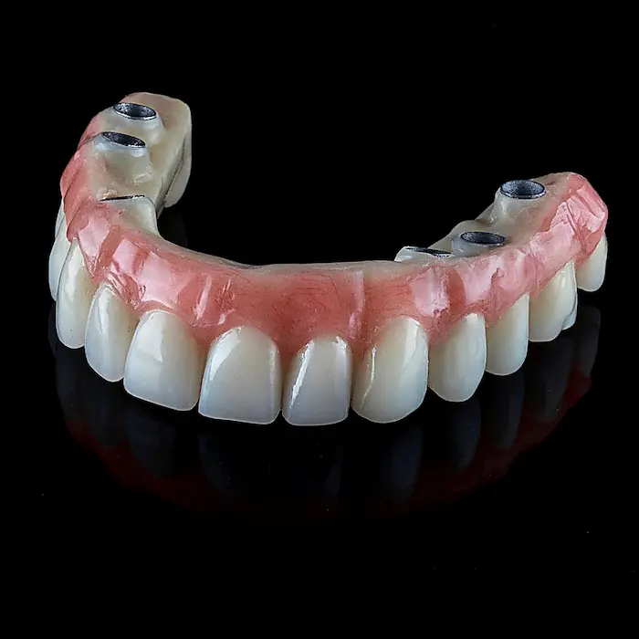

Reabilitação completaPrótese Total
Reabilitação completaPrótese TotalPrótese dentária em Fortaleza
Recupere sua mastigação, sua fala e a confiança de sorrir.
Avaliação personalizada para prótese total, parcial ou conserto de prótese, com acompanhamento em cada etapa do tratamento.

Dr. Carlos Martins
Cirurgião-dentista · CRO-CE 10625
★★★★★
4,9 no Google
Avaliações reais de pacientes
11
Unidades em Fortaleza
3 tipos
Total, parcial e fixa
Conserto
Reparo de prótese quebrada
Especialistas
Equipe qualificada
Avalie seu caso
Prótese dentária é indicada para você?
A prótese pode devolver conforto e função para quem perdeu dentes ou já usa uma prótese que não serve mais bem.
Perdeu um ou mais dentes
Usa prótese antiga solta ou desconfortável
Tem dificuldade para mastigar ou falar
Prótese quebrada ou desgastada
Quer um resultado mais natural
Busca mais conforto no dia a dia
Se você se identificou com alguma dessas situações, nossa equipe pode avaliar seu caso.
Agendar avaliação pelo WhatsApp
Tipos de prótese
Quero avaliar meu caso
Conheça as opções disponíveis para o seu caso.
Cada tipo de prótese atende uma necessidade diferente. Na avaliação, a equipe indica a opção mais adequada.
Reabilitação completaPrótese Total
Fixa sobre implantesPrótese Parafusada Reparo rápidoConserto de Prótese
Reparo rápidoConserto de Prótese
Por que usar prótese
Mais conforto para mastigar, falar e sorrir
A prótese bem ajustada devolve função e naturalidade para o dia a dia.
Mastigação melhor
Recupere a capacidade de comer com mais conforto e segurança.
Fala mais natural
Uma prótese bem ajustada ajuda a falar com clareza e confiança.
Sorriso completo
Resultado estético para sorrir sem se preocupar com espaços vazios.
Ajustes e conserto
Se a prótese quebrar ou não servir mais bem, também fazemos o reparo.
Como funciona
Sua prótese dentária em etapas
Avaliação e moldagem
Verificamos sua necessidade e fazemos os moldes iniciais.
Prova e ajustes
Testamos o encaixe e a estética antes da entrega final.
Entrega e adaptação
Orientação de uso e cuidados para o período de adaptação.
Acompanhamento
Retornos para ajustes finos e manutenção quando necessário.
Avaliação personalizada
Agendar pelo WhatsAppAtendimento rápido
Descubra qual prótese é ideal para o seu caso.
Chame no WhatsApp e agende uma avaliação. Vamos te orientar com clareza, sem pressão e sem promessa genérica.
Por que escolher a Dentalli?
Cuidado e precisão em cada etapa da sua prótese.
A equipe avalia seu caso e explica as opções disponíveis, para você decidir com segurança qual caminho seguir.
✓ 11 unidades em Fortaleza
✓ Avaliações reais no Google
✓ Planejamento personalizado
✓ Conserto de prótese quebrada
Avaliações
Pacientes que confiam na Dentalli
★★★★★
“Meu atendimento com Dr. Carlos tem sido muito excelente, desde o primeiro momento ele muito dedicado e atencioso explicando todo procedimento a ser feito. Eu super indico!!! Parabéns Dr. Carlos por tanta dedicação com o cliente.”
Cristina Lima Santos★★★★★
“Excelente profissional! Atendimento atencioso, cuidadoso e muito competente. Meu tratamento saiu perfeito. Recomendo demais o Dr. Carlos.”
Alia Barbosa★★★★★
“Ótimo Profissional! Atencioso, com esmerada ética e capacidade em solucionar os mais variados entraves odontológicos! Dr Carlos merece mais que cinco estrelas!”
Flavio Hildeberto
Dúvidas frequentes
O que você precisa saber sobre prótese dentária
A prótese incomoda no começo?
É comum sentir um período de adaptação. A equipe acompanha esse processo e faz ajustes para melhorar o conforto.
Quanto tempo dura uma prótese?
Depende do tipo, dos cuidados diários e do acompanhamento. Ajustes e manutenções ajudam a prolongar sua vida útil.
Dá para consertar uma prótese quebrada?
Na maioria dos casos sim. É importante avaliar a extensão do dano para indicar o melhor reparo.
Qual a diferença entre prótese fixa e removível?
A prótese fixa é presa sobre implantes ou dentes, enquanto a removível pode ser retirada pelo paciente para higienização.
Preciso fazer implante para usar prótese?
Não necessariamente. Existem opções de prótese convencional e opções fixadas sobre implantes, avaliadas conforme seu caso.
Sua mastigação e seu sorriso podem voltar ao normal.
Agende sua avaliação de prótese dentária na Dentalli.
Quero avaliar meu casoAtendimento rápido